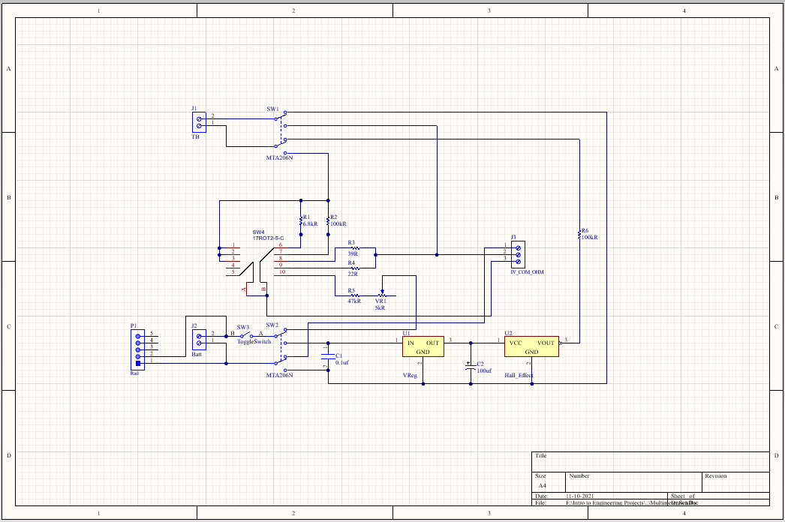
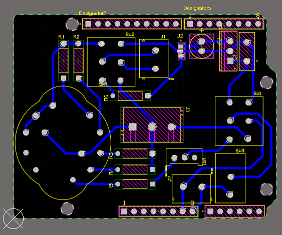
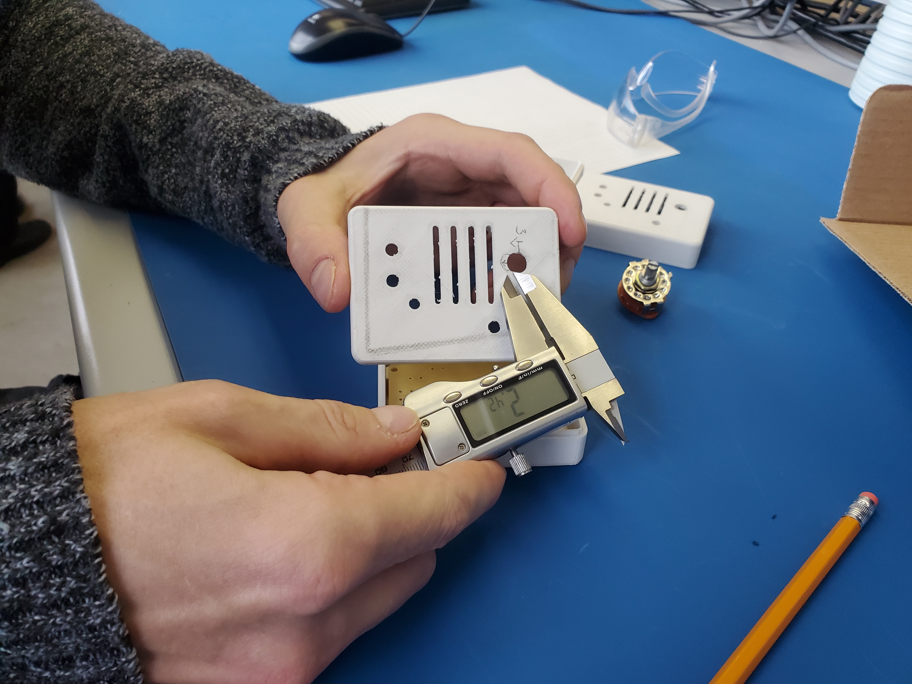

Semester One Project: Multimeter Design and Fabrication
As part of my first year in the Electronic Systems Engineering program at Conestoga College, I designed and built a compact multimeter capable of measuring voltages up to 10V and currents up to 10mA. This project was an introduction to hands-on circuit design, bridging theoretical knowledge from class with practical applications in electronics. It provided an opportunity to develop foundational skills in schematic design, PCB layout, and 3D CAD modeling.
Schematic Design
The schematic was created in Altium Designer. The design consisted of a rotary switch to select between the different voltage and current measurement modes, a voltage divider for scaling input voltages, and a shunt resistor for current measurement.

PCB Design & Fabrication
After finalizing the schematic, I designed the PCB using Altium Designer, which was milled in-house using a PCB milling machine.


Enclosure Design
To complete the project, a custom enclosure was designed in SOLIDWORKS and 3D printed to securely house both the PCB and Arduino.
